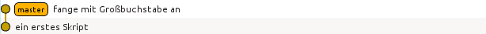
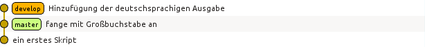
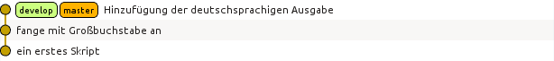
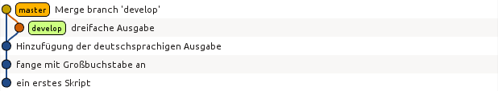
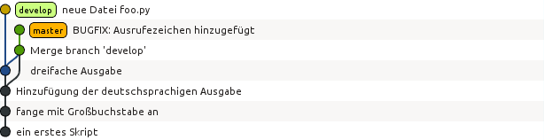
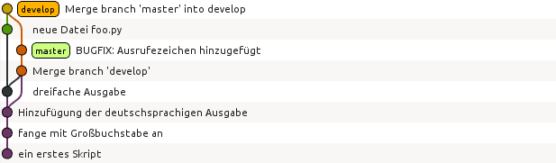
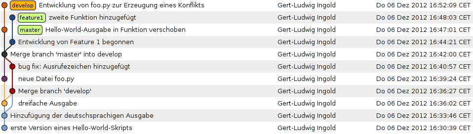
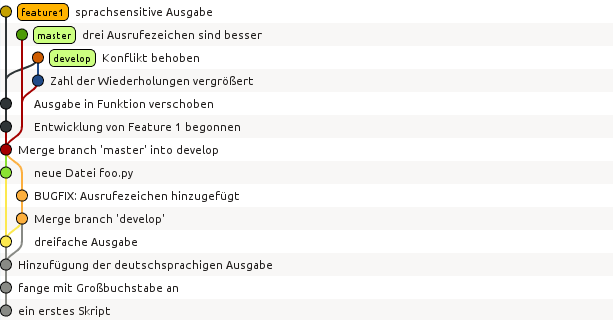

Versionskontrolle mit Git¶
Vorbemerkungen¶
Bei der Entwicklung von Programmen ist es sinnvoll, ein Versionskontrollsystem zu verwenden, das es erlaubt, alte Programmversionen systematisch aufzubewahren. Damit wird es beispielsweise möglich, auf definierte ältere Programmstände zurückzugehen. Es kann auch sinnvoll sein, die Versionsnummer in vom Programm erzeugten Daten abzuspeichern. Sollte sich später herausstellen, dass ein Programm fehlerhaft war, lässt sich auf diese Weise entscheiden, ob Daten von diesem Fehler betroffen sind oder nicht.
Das erste Versionskontrollsystem war das 1972 entwickelte SCCS. Später folgten Systeme wie RCS, CVS, Subversion, Git und Mercurial. Bei den aktuellen Versionskontrollsysteme lassen sich zwei Arten unterscheiden, solche die die Programmversionen zentral auf einem Server speichern und solche, bei denen die Programmversionen auf verschiedenen Rechnern verteilt vorliegen können. Die zweite Variante schließt den Fall mit ein, bei dem die Programmversionen ausschließlich lokal auf einem Rechner vorgehalten werden. Während bei einem zentralen Versionskontrollsystem eine Internetverbindung zum Server zwingend notwendig ist, lassen sich bei einem dezentralen Versionskontrollsystem Versionierungen auch ohne Internetanbindung vornehmen.
Ein Beispiel für ein modernes zentrales Versionskontrollsystem ist Subversion, während es sich bei Git und Mercurial um dezentrale Versionskontrollsysteme handelt. Obwohl Mercurial in Python geschrieben ist, wollen wir uns im Folgenden mit Git beschäftigen, das sich bei der Entwicklung freier Software großer Beliebtheit erfreut. Auch wenn es im Detail Unterschiede zwischen Mercurial und Git gibt, sind die beiden Versionskontrollsysteme einander sehr ähnlich.
Die Entwicklung von Git [1] wurde 2005 von Linus Torvalds begonnen, um ein geeignetes Versionskontrollsystem zur Entwicklung des Betriebssystemkerns von Linux zur Verfügung zu haben. Die Anforderungen ergaben sich vor allem daraus, dass Linux von einer sehr großen Zahl von Programmierern entwickelt wird, und somit die Übertragung von Code möglichst effizient, aber auch sicher vonstatten gehen muss. Im Hinblick auf den ersten Aspekt ist ein dezentrales System wesentlich besser geeignet als ein zentrales System. Detaillierte Informationen über Git findet man im Internet unter git-scm.com im Dokumentationsbereich.
Grundlegende Arbeitsschritte¶
Um für ein Verzeichnis sowie die darunterliegenden Verzeichnisse eine Versionierung zu ermöglichen, muss man zunächst die von Git benötigte Verzeichnisstruktur einrichten. Wir nehmen an, dass in unserem Benutzerverzeichnis, hier /home/gert, ein Verzeichnis wd für »working directory« existiert, in dem wir unsere Programmentwicklung durchführen wollen. Dieses Verzeichnis kann im Prinzip jeden beliebigen geeigneten Namen haben. Wir gehen zunächst in dieses Verzeichnis und initialisieren es für die Benutzung mit Git:
$ cd ~/wd
$ git init
Initialisierte leeres Git-Repository in /home/gert/wd/.git/
Im Unterverzeichnis .git werden alle relevanten Daten des Archivs liegen. So lange dieses Verzeichnis nicht modifiziert wird, was man ohnehin nicht tun sollte, oder gar gelöscht wird, sind die dort abgelegten Daten und damit alle Versionen noch verfügbar auch wenn alle anderen Dateien im Arbeitsverzeichnis gelöscht wurden.
Zu diesem Zeitpunkt ist es sinnvoll, Git auch den vollständigen Namen des Benutzers und eine zugehörige E-Mail-Adresse mitzuteilen:
$ git config user.name "Gert-Ludwig Ingold"
$ git config user.email "gert.ingold@physik.uni-augsburg.de"
Diese Informationen legt Git im Hauptverzeichnis des Benutzers in der Datei .gitconfig ab und verwendet sie bei der Übernahme von Dateien in das Versionsarchiv. Bei Bedarf lassen sich noch weitere Parameter einstellen, beispielsweise der Editor, den Git aufrufen soll, um dem Benutzer beim Abspeichern einer neuen Version die Möglichkeit zu geben, einen Kommentar abzuspeichern.
Um das Arbeiten mit Git zu illustrieren, legen wir anschließend eine erste Version eines Skripts hello.py mit folgendem Inhalt
print('Hello world')
in unserem Verzeichnis an. Nun, aber auch zu jeder anderen Zeit, kann man den Zustand des Arbeitsverzeichnisses abfragen:
$ git status
Auf Branch master
Initialer Commit
Unbeobachtete Dateien:
(benutzen Sie "git add <Datei>...", um die Änderungen zum Commit vorzumerken)
hello.py
nichts zum Commit vorgemerkt, aber es gibt unbeobachtete Dateien (benutzen Sie
"git add" zum Beobachten)
Git gibt hier eine ganze Menge an Informationen einschließlich eines Vorschlags, was wir als Nächstes tun könnten. Doch gehen wir der Reihe nach vor. Wir befinden uns laut der ersten Zeile der Statusausgabe auf dem master-Zweig. Weiter unten werden wir sehen, dass wir unter Git weitere Zweige anlegen können, in denen wir beispielsweise bestimmte Aspekte eines Programms weiterentwickeln wollen. Solche Zweige können später auch wieder zusammengeführt werden. Ferner weist uns Git darauf hin, dass noch keine Dateien versioniert wurden. Dem unteren Teil der Ausgabe können wir entnehmen, dass die Versionierung in zwei Stufen vor sich geht und es demzufolge zwei verschiedene Arten von Dateien gibt.
Git hat sehr wohl bemerkt, dass es eine neue Datei hello.py gibt, beachtet diese jedoch zunächst nicht weiter. Es wird aber am Ende darauf hingewiesen, dass sich Dateien mit Hilfe von git add für einen commit, also eine Versionierung, vormerken lassen. Diese Dateien werden dabei in eine so genannte staging area gebracht. Wir führen diesen Schritt nun aus und sehen uns den neuen Status an:
$ git add hello.py
$ git status
Auf Branch master
Initialer Commit
zum Commit vorgemerkte Änderungen:
(benutzen Sie "git rm --cached <Datei>..." zum Entfernen aus der Staging-Area)
neue Datei: hello.py
Damit ist unsere Datei nun für einen commit vorgemerkt. Gleichzeitig gibt uns Git einen Hinweis, wie wir die Datei wieder aus der staging area entfernen können, falls wir doch keine Versionierung durchführen möchten. Bevor wir mit einem commit fortfahren, wollen wir zunächst erkunden, was es damit auf sich hat, wenn eine Datei in die staging area gebracht wird. Dazu sehen wir uns etwas im .git-Unterverzeichnis um:
$ ls .git
branches config description HEAD hooks index info objects refs
$ ls .git/objects
75 info pack
$ ls .git/objects/75
d9766db981cf4e8c59be50ff01e574581d43fc
Im Unterverzeichnis .git/objects/75 liegt nun eine Datei mit der etwas merkwürdigen Bezeichnung d9766db981cf4e8c59be50ff01e574581d43fc. Stellt man noch die 75 aus dem Verzeichnisnamen voran, so handelt es sich hierbei um den so genannten SHA1-Hashwert [2] des Objekts, wie wir folgendermaßen überprüfen können [3]:
from hashlib import sha1
def githash(data):
s = sha1()
s.update(("blob %u\0" % len(data)).encode('utf8'))
s.update(data)
return s.hexdigest()
content = "print('hello world')\n"
print(githash(content))
SHA1-Hashwerte bestehen aus 40 Hexadezimalzahlen und charakterisieren den Inhalt eines Objekts eindeutig. Immerhin gibt es etwa \(10^{48}\) verschiedene Hashwerte. Git benutzt diesen Hashwert, um schnell Objekte identifizieren und auf Gleichheit testen zu können. Meistens genügen die ersten sechs oder sieben Hexadezimalzahlen, um ein Objekt eindeutig auszuwählen. Wir können uns den Inhalt des erzeugten Objekts mit Hilfe von Git folgendermaßen ansehen:
$ git cat-file -p 75d9766
print('hello world')
Gemäß der obigen Statusanzeige müssen wir in einem zweiten Schritt noch einen commit ausführen:
$ git commit -m "ein erstes Skript"
[master (Basis-Commit) f442b34] ein erstes Skript
1 file changed, 1 insertion(+)
create mode 100644 hello.py
Mit Hilfe des Arguments -m haben wir noch einen Kommentar angegeben. Ohne dieses Argument hätte Git einen Editor geöffnet, um die Eingabe eines Kommentars zu ermöglichen. Es empfiehlt sich im Hinblick auf die Übersichtlichkeit von späteren längeren Ausgaben, Kommentare auf nicht zu lange Einzeiler zu beschränken.
Was hat sich durch den commit im Verzeichnis der Objekte getan? Wir stellen fest, dass unser altes Objekt noch vorhanden ist und zwei Objekte hinzugekommen sind:
$ ls -R .git/objects
.git/objects:
75 ed f4 info pack
.git/objects/75:
d9766db981cf4e8c59be50ff01e574581d43fc
.git/objects/ed:
868ae92a213b64de2ad627b27458537539bcdc
.git/objects/f4:
42b34f6400811648a3c94a8ddd5bfb417e1cf5
.git/objects/info:
.git/objects/pack:
Sehen wir uns die neuen Objekte an:
$ git cat-file -p f442b34
tree ed868ae92a213b64de2ad627b27458537539bcdc
author Gert-Ludwig Ingold <gert.ingold@physik.uni-augsburg.de> 1420469345 +0100
committer Gert-Ludwig Ingold <gert.ingold@physik.uni-augsburg.de> 1420469345 +0100
ein erstes Skript
$ git cat-file -p ed868ae
100644 blob 75d9766db981cf4e8c59be50ff01e574581d43fc hello.py
Bei dem ersten Objekt handelt es sich um ein so genanntes commit-Objekt, das neben den Angaben zur Person und dem Kommentar einen Verweis auf ein tree-Objekt enthält. Das zweite neue Objekt ist genau dieses tree-Objekt. Es enthält Informationen über die Objekte, die zu dem betreffenden commit gehören. In unserem Fall ist dies das uns bereits bekannte blob-Objekt, das den Inhalt unseres Skripts hello.py enthält.
Nun ist es Zeit, unser Skript zu überarbeiten. Im Wort »hello« ersetzen wir das kleine h durch ein großes H. Git meldet dann den folgenden Status:
$ git status
Auf Branch master
Änderungen, die nicht zum Commit vorgemerkt sind:
(benutzen Sie "git add <Datei>...", um die Änderungen zum Commit vorzumerken)
(benutzen Sie "git checkout -- <Datei>...", um die Änderungen im Arbeitsverzeichnis
zu verwerfen)
geändert: hello.py
keine Änderungen zum Commit vorgemerkt (benutzen Sie "git add" und/oder
"git commit -a")
Git hat erkannt, dass wir unser Skript modifiziert haben, führt aber keinerlei Schritte im Hinblick auf eine Versionierung aus. Diese sind uns überlassen, wobei uns Git wieder Hilfestellung gibt. Nehmen wir an, dass wir die Änderungen wieder rückgängig machen wollen. Dies geht wie folgt:
$ git checkout -- hello.py
$ git status
Auf Branch master
nichts zu committen, Arbeitsverzeichnis unverändert
$ cat hello.py
print('hello world')
Tatsächlich liegt jetzt wieder die ursprüngliche Fassung des Skripts vor. Da wir die neue Fassung nicht zur staging area hinzugefügt haben, sind unsere Änderungen verloren gegangen. Sie können somit nicht wiederhergestellt werden, wie dies bei einer erfolgten Versionierung der Fall gewesen wäre. Man sollte daher mit dem beschriebenen Vorgehen besonders vorsichtig sein.
Wir wiederholen nun zur Wiederherstellung der geänderten Version die Umwandlung des h in einen Großbuchstaben. Anschließend könnten wir wieder die beiden Schritte git add hello.py und git commit ausführen. Alternativ lässt sich dies in unserem Fall in einem einzigen Schritt bewältigen:
$ git commit -a -m "fange mit Großbuchstabe an"
[master 79ff614] fange mit Großbuchstabe an
1 file changed, 1 insertion(+), 1 deletion(-)
Zu beachten ist dabei allerdings, dass auf diese Weise alle Dateien, von denen Git weiß, dem commit unterzogen werden auch wenn dies vielleicht nicht gewünscht ist. Es ist daher oft sinnvoll, zunächst explizit mit git add die Dateien für einen commit festzulegen. Damit lassen sich gezielt thematisch zusammenhängende Änderungen auswählen.
Während der Hashwert des ersten commit-Objekts mit f442b34 begann, fängt der Hashwert des neuesten commit-Objekts mit 79ff614 an. Git bezieht sich auf Versionen mit Hilfe dieser Hashwerte und nicht mit zeitlich ansteigenden Versionsnummern. Letzteres ist für ein dezentral organisiertes Versionskontrollsystem nicht möglich, da im Allgemeinen nicht bekannt sein kann, ob andere Entwickler in der Zwischenzeit Änderungen am gleichen Projekt durchgeführt haben.
Einen Überblick über die verschiedenen vorhandenen Versionen kann man sich folgendermaßen verschaffen:
$ git log
commit 79ff6141783ca76a5424271d2cede769ff45fb28
Author: Gert-Ludwig Ingold <gert.ingold@physik.uni-augsburg.de>
Date: Mon Jan 5 16:30:22 2015 +0100
fange mit Großbuchstabe an
commit f442b34f6400811648a3c94a8ddd5bfb417e1cf5
Author: Gert-Ludwig Ingold <gert.ingold@physik.uni-augsburg.de>
Date: Mon Jan 5 15:49:05 2015 +0100
ein erstes Skript
Die Ausgabe kann mit Optionen sehr detailliert beeinflusst werden. Wir geben hier nur ein Beispiel:
$ git log --pretty=oneline
79ff6141783ca76a5424271d2cede769ff45fb28 fange mit Großbuchstabe an
f442b34f6400811648a3c94a8ddd5bfb417e1cf5 ein erstes Skript
Diese einzeilige Ausgabe funktioniert dann besonders gut, wenn man sich wie weiter oben bereits empfohlen bei der Beschreibung der Version auf eine einzige, möglichst informative Zeile beschränkt. Informationen über weitere Optionen von Git-Befehlen erhält man grundsätzlich mit git help und der anschließenden Angabe des gewünschten Befehls, in unserem Falle also git help log.
Details zu einer Version, im Folgenden die Version 79ff614, erhält man folgendermaßen:
$ git show 79ff614
commit 79ff6141783ca76a5424271d2cede769ff45fb28
Author: Gert-Ludwig Ingold <gert.ingold@physik.uni-augsburg.de>
Date: Mon Jan 5 16:30:22 2015 +0100
fange mit Großbuchstabe an
diff --git a/hello.py b/hello.py
index 75d9766..f7d1785 100644
--- a/hello.py
+++ b/hello.py
@@ -1 +1 @@
-print('hello world')
+print('Hello world')
Dieser Ausgabe kann man entnehmen, dass das Objekt 75d9766... in das Objekt f7d1785... umgewandelt wurde. Aus den letzten Zeilen kann man die Details der Änderung ersehen.
Wir hatten weiter oben darauf hingewiesen, dass man im Detail beeinflussen kann, welche Dateien beim nächsten commit berücksichtigt werden. Dazu werden die betreffenden Dateien mit einem git add in die staging area aufgenommen. In diesem Zusammenhang kann es passieren, dass man eine Datei versehentlich zu diesem Index hinzufügt. Im folgenden Beispiel sei dies eine Datei namens spam.py:
$ git add spam.py
$ git status
Auf Branch master
zum Commit vorgemerkte Änderungen:
(benutzen Sie "git reset HEAD <Datei>..." zum Entfernen aus der Staging-Area)
neue Datei: spam.py
Diese Datei lässt sich nun wie angegeben wieder aus der staging area entfernen:
$ git reset HEAD spam.py
$ git status
Auf Branch master
Unbeobachtete Dateien:
(benutzen Sie "git add <Datei>...", um die Änderungen zum Commit vorzumerken)
spam.py
nichts zum Commit vorgemerkt, aber es gibt unbeobachtete Dateien (benutzen Sie
"git add" zum Beobachten)
Im Arbeitsverzeichnis ist die Datei spam.py weiterhin vorhanden. Im reset-Befehl verweist HEAD hier auf die Arbeitsversion im aktuellen Zweig, deren Hashwert wir somit nicht explizit kennen müssen.
Verzweigen und Zusammenführen¶
Bei der Entwicklung von Software ist es häufig sinnvoll, gewisse Weiterentwicklungen vom Hauptentwicklungsstrang zumindest zeitweise abzukoppeln. Dies erreicht man durch Verzweigungen. Ein typischer Fall wäre ein öffentliches Release, das im Hauptzweig zum nächsten Release weiterentwickelt wird. Daneben kann es aber noch einen Zweig geben, in dem ausschließlich Fehler des Releases korrigiert und dann wieder veröffentlicht werden. In einem anderen Szenario behinhaltet der Hauptzweig, der in Git unter dem Namen master läuft, immer eine lauffähige Version, während zur Entwicklung gewisser Programmaspekte separate Zweige benutzt werden. Um ein auf diese Weise entwickeltes Feature in die Version des Hauptzweiges einfließen zu lassen, muss man Zweige auch wieder zusammenführen können. Das Verzweigen und Zusammenführen geht in Git sehr einfach, da lediglich Markierungen gesetzt werden. Daher gehört das Verzweigen und Zusammenführen bei der Arbeit mit Git zu den Standardverfahren, die regelmäßig zum Einsatz kommen.
Zu Beginn gibt es nur einen Zweig, der, wie wir bereits wissen, den Namen master besitzt. Im vorigen Kapitel haben wir in diesem Zweig zwei Versionen erzeugt. Eine graphische Darstellung, die hier mit dem Git-Archive-Betrachter gitg erzeugt wurde, sieht dann folgendermaßen aus:
{kind=link}
Die Information über die vorhandenen Zweige lässt sich auch direkt auf der Kommandzeile erhalten. In der folgenden Ausgabe ist zu erkennen, dass es nur einen Zweig, nämlich master gibt. Der Stern zeigt zudem an, dass wir uns gerade in diesem Zweig befinden.
$ git branch
* master
Die Situation wird interessanter, wenn wir einen weiteren Zweig anlegen, der von master abzweigt. Wir nennen ihn develop, da dort die Programmentwicklung erfolgen soll, während in master immer eine lauffähige Version enthalten sein soll. Damit ist es unproblematisch, wenn das Programm im develop-Zweig zeitweise nicht funktionsfähig ist.
$ git branch develop
$ git branch
develop
* master
{kind=link}
Der neue Zweig develop tritt zunächst nur als weitere Bezeichnung neben master in Erscheinung. Die Verzweigung wird erst später deutlich werden, wenn wir Dateien in den jeweiligen Zweigen verändern.
Um nun in develop arbeiten zu können, müssen wir in diesen Zweig wechseln:
$ git checkout develop
Zu Branch 'develop' gewechselt
$ git branch
* develop
master
Der Stern zeigt an, dass der Zweigwechsel tatsächlich vollzogen wurde.
Bearbeitet man nun eine Datei im develop-Zweig und führt ein commit durch, so wird die Trennung der beiden Zweige deutlich.
{kind=link}
Wir wechseln nun in den master-Zweig zurück und führen ein merge, also eine Vereinigung von zwei Zweigen durch. Git sucht in diesem Fall nach dem gemeinsamen Vorfahren der beiden Zweige und baut die im develop-Zweig durchgeführten Änderungen auch im master-Zweig ein:
$ git checkout master
Zu Branch 'master' gewechselt
$ git merge develop
Aktualisiere 79ff614..79f695b
Fast-forward
hello.py | 1 +
1 file changed, 1 insertion(+)
Da im master-Zweig in der Zwischenzeit keine Änderungen vorgenommen wurden, linearisiert Git die Vorgeschichte. Es sind aber nach wie vor beide Zweige vorhanden.
{kind=link}
Möchte man festhalten, dass die Entwicklung im develop-Zweig durchgeführt wurde, so kann man dieses so genannte fast forward mit der Option --no-ff beim Zusammenführen der beiden Zweige verhindern. Um dies zu zeigen, wechseln wir zunächst in den develop-Zweig.
$ git checkout develop
Zu Branch 'develop' gewechselt
Dort führen wir die gewünschten Änderungen und einen anschließenden commit durch. Nach dem Wechsel in den master-Zweig benutzen wir nun beim Zusammenführen die Option --no-ff.
$ git commit -a -m 'dreifache Ausgabe'
[develop d2bfce0] dreifache Ausgabe
1 file changed, 3 insertions(+), 2 deletions(-)
$ git checkout master
Zu Branch 'master' gewechselt
$ git merge --no-ff develop
Merge made by the 'recursive' strategy.
hello.py | 5 +++--
1 file changed, 3 insertions(+), 2 deletions(-)
Die folgende Abbildung zeigt, dass die Versionsgeschichte jetzt den Zweig darstellt, in dem die Änderung tatsächlich erfolgte.
{kind=link}
Genauso wie man Änderungen aus dem develop-Zweig in den master-Zweig übernehmen kann, kann man auch Änderungen vom master-Zweig in den develop-Zweig übernehmen. Eine typische Situation besteht darin, dass im master-Zweig ein Fehler korrigiert wird, der auch in der Entwicklungsversion vorliegt. Zunächst nehmen wir an, dass im develop-Zweig weiter gearbeitet wird. Im master-Zweig wird der Fehler korrigiert, so dass jetzt in beiden Zweigen Änderungen vorliegen.
{kind=link}
Um Änderungen aus dem master-Zweig in den develop-Zweig zu übernehmen, wechseln wir in Letzteren und führen dort ein merge des master-Zweigs durch:
$ git checkout develop
Zu Branch 'develop' gewechselt
$ git merge master
Merge made by the 'recursive' strategy.
hello.py | 4 ++--
1 file changed, 2 insertions(+), 2 deletions(-)
Damit sieht unser Verzweigungsschema folgendermaßen aus:
{kind=link}
Um ein neues Feature für ein Programm zu entwickeln, wird häufig ein Zweig vom develop-Zweig abgespalten und nach der Entwicklung mit Letzterem wieder zusammengeführt. Sollte die Entwicklung nicht erfolgreich gewesen sein, so verzichtet man auf die Zusammenführung oder löscht den überflüssig gewordenen Zweig. Bei dieser Gelegenheit zeigen wir, wie man das Anlegen eines neuen Zweigs und das Wechseln in diesen Zweig mit einem Kommando erledigen kann:
$ git checkout -b feature1
Gewechselt zu einem neuen Branch 'feature1'
{kind=link}
Unabhängig von der Entwicklung im feature1-Zweig kann man nun Änderungen zwischen dem master- und dem develop-Zweig austauschen:
$ git branch
develop
* feature1
master
$ git checkout master
Zu Branch 'master' gewechselt
$ git merge develop
Aktualisiere 70f9136..5b5d1e9
Fast-forward
foo.py | 1 +
1 file changed, 1 insertion(+)
create mode 100644 foo.py
{kind=link}
Bis jetzt gingen alle Zusammenführungen problemlos von statten. Es kann aber durchaus zu Konflikten kommen, die sich für Git nicht eindeutig auflösen lassen. Dann muss der Konflikt von Hand gelöst werden. Um dies zu illustrieren, führen wir im develop-Zweig eine Änderung ein, die beim Zusammenführen mit dem feature1-Zweig zu einem Konflikt führt.
{kind=link}
Die folgende Ausgabe zeigt, wie Git einen Konflikt anzeigt. In der konfliktbehafteten Datei hello.py sind die kritischen Stellen gegenübergestellt. Zunächst wird die problematische Codestelle in der Arbeitsversion des develop-Zweigs angezeigt. Getrennt von ======= folgt dann der Code aus dem feature1-Zweig, der im develop-Zweig aufgenommen werden soll.
$ git branch
* develop
feature1
master
$ git merge feature1
automatischer Merge von hello.py
KONFLIKT (Inhalt): Merge-Konflikt in hello.py
Automatischer Merge fehlgeschlagen; beheben Sie die Konflikte und committen Sie
dann das Ergebnis.
$ cat hello.py
<<<<<<< HEAD
for n in range(4):
print('Hello world!')
print('Hallo Welt!')
=======
def myfunc1(n):
for _ in range(3):
print('Hello world!')
print('Hallo Welt!')
>>>>>>> feature1
In einer solchen Situation muss der Benutzer entscheiden, welche Version die gewünschte ist. Unter Umständen kann es erwünscht, Teile jeweils aus dem einen oder dem anderen Zweig zu entnehmen. Hat man eine zufriedenstellende Version erstellt, kann man einen commit durchführen.
$ git add hello.py
$ git commit -m'Konflikt behoben'
[develop ef71e70] Konflikt behoben
Um abschließend die drei Zweige zu zeigen, die in der Diskussion eine Rolle gespielt haben, führen wir noch je eine Änderung im master- und im feature1-Zweig durch und erhalten damit das folgende Bild:
{kind=link}
Der Umstand, dass wir bereits in wenigen Schritten ein relativ komplexes Verzweigungsdiagramm erhalten haben, legt es inbesondere für größere Projekte nahe, sich eine Strategie für das Anlegen von Zweigen und die darin auszuführenden Aufgaben zu überlegen. Bei Projekten mit mehreren Entwicklern ist andererseits gerade die Möglichkeit, Zweige einzurichten, nützlich, um die anderen Entwickler nicht unnötig mit Code zu belasten, der nur lokal für einen Entwickler von Bedeutung ist.
Umgang mit entfernten Archiven¶
Bis jetzt haben wir uns nur mit der Arbeit mit einem lokalen Archiv beschäftigt. Wenn mehrere Entwickler zusammenarbeiten, muss es jedoch die Möglichkeit des Austauschs von Code geben. Unter einem zentralen Versionskontrollsystem wie Subversion dient hierzu das Archiv auf dem zentralen Server, über den ohnehin die gesamte Versionskontrolle läuft. Auch unter Git ist es sinnvoll, ein zentrales Archiv zu haben, das jedoch vor allem für den Datenaustausch und nicht so sehr für die Versionskontrolle herangezogen wird. Somit benötigt man nur für den Datenaustausch mit dem zentralen Archiv eine funktionierende Internetanbindung, während die Versionskontrolle auch ohne sie möglich ist.
Je nachdem welches Protokoll für den Datenzugriff zugelassen ist und welche Zugriffsrechte man besitzt, kann man auf das zentrale Archiv lesend oder eventuell auch schreibend zugreifen. In den folgenden Beispielen wollen wir einen Zugriff per ssh, also secure shell, annehmen, der uns, nach entsprechender Authentifizierung, sowohl Lese- als auch Schreibzugriff ermöglicht. Das zentrale Archiv soll auf dem Rechner nonexistent liegen, der, wie der Name schon andeutet, in Wirklichkeit nicht existiert. Der Name ist also entsprechend anzupassen. Der Zugriff erfolge über einen Benutzer namens user. Auch der Benutzername muss an die tatsächlichen Gegebenheiten angepasst werden.
Als erstes erzeugen wir uns lokal ein Git-Arbeitsverzeichnis, indem wir das zentrale Archiv klonen. Zur Illustration haben wir dort zunächst wieder nur eine Version eines einfachen Skripts abgelegt.
$ git clone ssh://user@nonexistent.physik.uni-augsburg.de/home/user/dummy.git dummy
Klone nach 'dummy'...
remote: Counting objects: 3, done.
remote: Total 3 (delta 0), reused 0 (delta 0)
Empfange Objekte: 100% (3/3), Fertig.
Prüfe Konnektivität... Fertig
$ cd dummy
$ git branch -va
* master 96ffbf6 hello world Skript
remotes/origin/HEAD -> origin/master
remotes/origin/master 96ffbf6 hello world Skript
$ cat hello.py
print('hello world')
Nach dem Wechsel in das Arbeitsverzeichnis sehen wir, dass neben dem gewohnten master-Zweig noch zwei remote-Zweige existieren. Hierbei handelt es sich um Zweige, die auf das zentrale Archiv verweisen, das standardmäßig mit origin bezeichnet wird. Um die remote-Zweige angezeigt zu bekommen, muss die Option -a angegeben werden. Andernfalls beschränkt sich die Ausgabe auf die lokal vorhandenen Zweige. Informationen über entfernte Archive und den zugehörigen Zugriffsweg erhält man mit:
$ git remote -v
origin ssh://user@nonexistent.physik.uni-augsburg.de/home/user/dummy.git (fetch)
origin ssh://user@nonexistent.physik.uni-augsburg.de/home/user/dummy.git (push)
Nehmen wir an, dass auf dem zentralen Server eine Datei verändert wurde, so können wir diese von dort in unser Arbeitsverzeichnis holen:
$ git fetch origin
remote: Counting objects: 5, done.
remote: Total 3 (delta 0), reused 0 (delta 0)
Entpacke Objekte: 100% (3/3), Fertig.
Von ssh://user@nonexistent.physik.uni-augsburg.de/home/user/dummy.git
96ffbf6..26f3c10 master -> origin/master
Dabei wird nur der origin-Zweig aktualisiert, wie am Ausrufezeichen, das in der aktuellen Version von hello.py hinzugefügt wurde, zu sehen ist:
$ git branch -a
* master
remotes/origin/HEAD -> origin/master
remotes/origin/master
$ cat hello.py
print('hello world')
$ git checkout origin
Note: checking out 'origin'.
You are in 'detached HEAD' state. You can look around, make experimental
changes and commit them, and you can discard any commits you make in this
state without impacting any branches by performing another checkout.
If you want to create a new branch to retain commits you create, you may
do so (now or later) by using -b with the checkout command again. Example:
git checkout -b new_branch_name
HEAD ist jetzt bei 26f3c10... mit Ausrufezeichen
$ cat hello.py
print('hello world!')
Wie uns Git informiert, können wir im origin-Zweig keine Änderungen vornehmen. Wir können uns dort aber umsehen und uns auf diese Weise davon überzeugen, dass das Skript dort das Aufrufezeichen enthält. Die Änderung können wir wie im vorigen Kapitel beschrieben in den master-Zweig unseres lokalen Archivs übernehmen:
$ git checkout master
Vorherige Position von HEAD war 26f3c10... mit Ausrufezeichen
Zu Branch 'master' gewechselt
Ihr Branch ist zu 'origin/master' um 1 Commit hinterher, und kann vorgespult werden.
(benutzen Sie "git pull", um Ihren lokalen Branch zu aktualisieren)
$ git merge origin
Aktualisiere 96ffbf6..26f3c10
Fast-forward
hello.py | 2 +-
1 file changed, 1 insertion(+), 1 deletion(-)
$ cat hello.py
print('hello world!')
Die Aktualisierung auf den Stand des zentralen Archivs haben wir hier in zwei Schritten durchgeführt. Es ist jedoch auch möglich, dies in einem Schritt zu erledigen. Wir nehmen an, dass ein anderer Entwickler das Skript mit einem weiteren Ausrufezeichen versehen hat, und führen dann eine so genannte pull-Operation aus:
$ git pull origin
remote: Counting objects: 5, done.
remote: Total 3 (delta 0), reused 0 (delta 0)
Entpacke Objekte: 100% (3/3), Fertig.
Von ssh://user@nonexistent.physik.uni-augsburg.de/home/user/dummy.git
26f3c10..10f6489 master -> origin/master
Aktualisiere 26f3c10..10f6489
Fast-forward
hello.py | 2 +-
1 file changed, 1 insertion(+), 1 deletion(-)
$ cat hello.py
print("hello world!!")
Schreibzugriff vorausgesetzt kann man umgekehrt auch neue Dateiversionen im zentralen Archiv ablegen. Hierzu dient die push-Operation. Hierzu ändern wir den Ausgabetext unseres Skripts und legen das neue Skript in unser lokales Archiv. Anschließend kann die Übertragung in das zentrale Archiv erfolgen:
$ cat hello.py
print "Hallo Welt!!"
$ git commit hello.py -m"deutsche Variante"
[master d2b98d1] deutsche Variante
1 file changed, 1 insertion(+), 1 deletion(-)
$ git push origin
Zähle Objekte: 3, Fertig.
Schreibe Objekte: 100% (3/3), 290 bytes | 0 bytes/s, Fertig.
Total 3 (delta 0), reused 0 (delta 0)
To ssh://user@nonexistent.physik.uni-augsburg.de/home/user/dummy.git
10f6489..d2b98d1 master -> master
Problematisch wird die Situation, wenn zwischen einer pull-Operation und einer push-Operation ein anderer Entwickler das zentrale Archiv verändert hat:
$ git commit hello.py -m"Ausgabe deutsch und englisch"
[master 8e5577d] Ausgabe deutsch und englisch
1 file changed, 1 insertion(+)
$ git push origin
To ssh://user@nonexistent.physik.uni-augsburg.de/home/user/dummy
! [rejected] master -> master (fetch first)
error: Fehler beim Versenden einiger Referenzen nach
'ssh://user@nonexistent.physik.uni-augsburg.de/home/user/dummy.git'
Hinweis: Aktualisierungen wurden zurückgewiesen, weil das Remote-Repository Commits
Hinweis: enthält, die lokal nicht vorhanden sind. Das wird üblicherweise durch einen
Hinweis: "push" von Commits auf dieselbe Referenz von einem anderen Repository aus
Hinweis: verursacht. Vielleicht müssen Sie die externen Änderungen zusammenzuführen
Hinweis: (z.B. 'git pull ...') bevor Sie erneut "push" ausführen.
Hinweis: Siehe auch die Sektion 'Note about fast-forwards' in 'git push --help'
Hinweis: für weitere Details.
Wir folgen dem Hinweis und holen uns zunächst die veränderte Version:
$ git pull origin
remote: Counting objects: 10, done.
remote: Compressing objects: 100% (2/2), done.
remote: Total 6 (delta 0), reused 0 (delta 0)
Entpacke Objekte: 100% (6/6), Fertig.
Von ssh://user@nonexistent.physik.uni-augsburg.de/home/user/dummy.git
d2b98d1..a2e308b master -> origin/master
automatischer Merge von hello.py
KONFLIKT (Inhalt): Merge-Konflikt in hello.py
Automatischer Merge fehlgeschlagen; beheben Sie die Konflikte und committen Sie dann
das Ergebnis.
Dabei kommt es zu einem Konflikt, da das gleiche Skript in verschiedener Weise verändert wurde. Zunächst muss nun dieser Konflikt beseitigt werden, damit anschließend die gewünschte Fassung der Datei versioniert werden kann:
$ git add hello.py
$ git commit
[master c189281] Merge branch 'master' of
ssh://user@nonexistent.physik.uni-augsburg.de/home/user/dummy.git
Anschließend kann diese Version erfolgreich im zentralen Archiv abgelegt werden:
$ git push origin
Zähle Objekte: 4, Fertig.
Delta compression using up to 4 threads.
Komprimiere Objekte: 100% (2/2), Fertig.
Schreibe Objekte: 100% (4/4), 515 bytes | 0 bytes/s, Fertig.
Total 4 (delta 1), reused 0 (delta 0)
To ssh://user@nonexistent.physik.uni-augsburg.de/home/user/dummy.git
a2e308b..c189281 master -> master
An diesem Beispiel wird deutlich, dass es durchaus problematisch sein kann, wenn viele Entwickler Schreibzugriff auf ein zentrales Archiv haben. Daher wird häufig einem breiteren Personenkreis lediglich Lesezugriff gewährt. Nur ein einzelner Entwickler oder eine kleine Gruppe hat Schreibzugriff auf das zentrale Archiv und kann so neuen Code dort ablegen. Dies geschieht mit einer pull-Operation von einem Archiv des Entwicklers, der den Code zur Verfügung stellt. Hierzu ist wiederum eine Leseberechtigung nötig. Möchte ein Entwickler bei diesem Verfahren Code für das zentrale Archive zur Verfügung stellen, so stellt er eine pull-Anfrage (pull request). Eventuell nach einer Diskussion und Prüfung entscheidet der Verantwortliche für das zentrale Archiv über die Aufnahme in das zentrale Archiv und führt die pull-Operation durch (oder auch nicht). Eine häufig verwendete Infrastruktur, die in dieser Weise insbesondere auch für die Entwicklung freier Software benutzt wird, ist GitHub.
| [1] | Zur Namensgebung sagte Linus Torvalds unter anderem „I’m an egoistical bastard, and I name all my projects after myself. First Linux, now git.“ Die Ironie dieses Satzes wird deutlich wenn man bedenkt, dass git im Englischen so viel wie Blödmann oder Depp bedeutet. |
| [2] | Siehe zum Beispiel en.wikipedia.org/wiki/SHA-1. |
| [3] | Der folgende Code basiert auf einem Vorschlag auf stackoverflow.com/questions/552659/assigning-git-sha1s-without-git. |